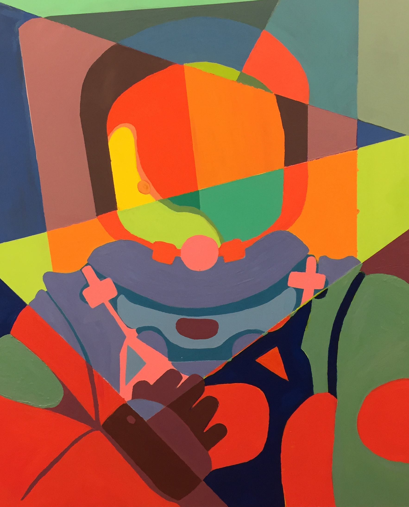
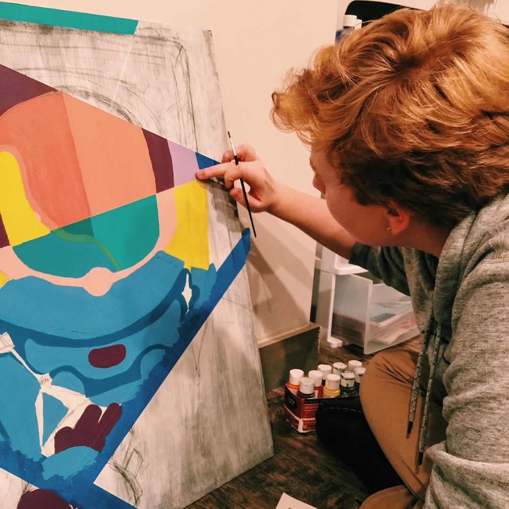
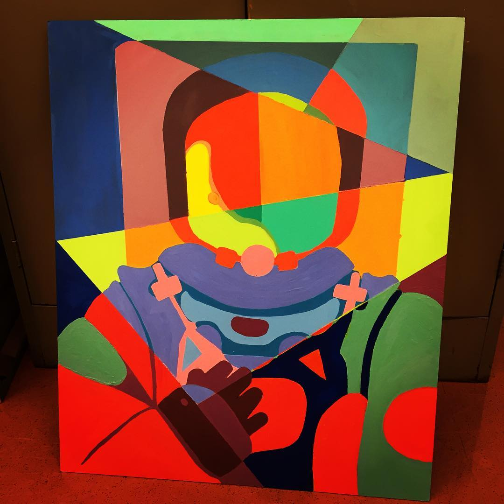

 

Astronauts and Abstractions
This piece, which done to complete a project, was largely something independant of the guidelines and something taken from personal inspiration. When given the project guidelines, most of the class was led to either industrial landscaped or very organic and floral pieces.
It was not until I found portraiture that I had gotten an inspiration, and decided to imitate the style of lines I had seen in various examples by intergrating a Zentangle- esque "string" to guide my colors.
The colors were picked individually and changed multiple times along the way, to the point where in some areas a shape has up to seven layers of paint. This never created a problem, but did in fact create an interesting texture along the straightedge lines, where you can feel the paint that has dried.
This unintentional texture is amusing since the piece has no real texture to speak of. The structure given to the piece by the bold shapes and colors was difficult to work with in a very similar way, since it limited the work I could do not just with texture but also with elements such as value which could easily unbalance or disrupt the piece.
This created a few challenges in the piece, but definitley helped me with styilizing my work and making iconic pieces look more professional.
If I were to do a similar project (ex. using bold colors and shapes to abstract a subject) I would definitley make sure to do more testing with different tapes beforehand. I learned that frogtape and masking tape were the most effective for this but not without a fair shape of mishaps. I'd also say that instead of mixing colors I'd much rather take colors from the tube so that when and if mistakes are made an entire shape wouldn't have to be repainted.
I think also that with mixing this piece taught me the skill difference between painting realistically versus stylistically, since mixed colors on pieces like this end up creating problems if not mixed thoroughly or if not enough is mixed, whereas in a realistic painting mixing becomes the best skill a painter can use.
Ultimatley this piece was a lot of learning how to use my medium for the purpose I wanted to use it for, in other terms, a learning curve. The result isn't too sloppy and is definitley fun, so overall (even with the flaws and errors), I'd consider this a more successful piece.